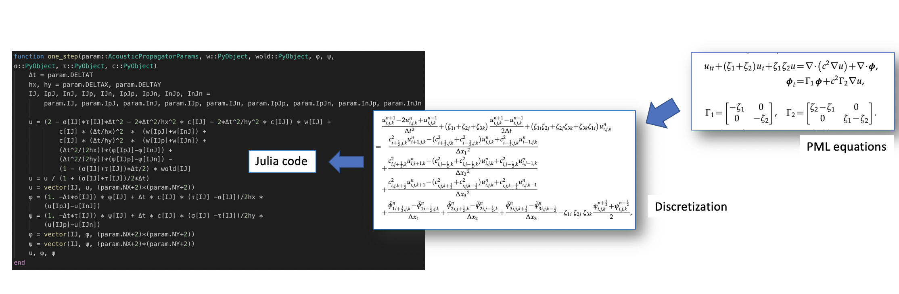
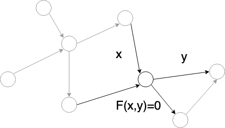

Inverse Modeling
Inverse modeling (IM) identifies a certain set of parameters or functions with which the outputs of the forward model matches the desired result or measurement. IM can usually be solved by formulating it as an optimization problem. But the major difference is that IM aims at getting information not accessible to forward model, instead of obtaining an optimal value of a fixed objective function and set of constraints. In practice, the objective function and constraints can be adjusted and prior information of the unknown parameters or functions can be imposed in the form of regularizers to better reflect the physical laws.
The inverse modeling problem can be mathematically formulated as finding an unknown parameter $X$ given input $\theta = \hat \theta$ and output $u = \hat u$ of a forward model
Here $\theta$ and $u$ can be a sample from a stochastic process. The scope of inverse problems that can be tackled with ADCME is
- The forward model must be differentiable, i.e., $\frac{\partial F}{\partial X}$ and $\frac{\partial F}{\partial \theta}$ exist. However, we do not require those gradients to be implemented by users; they can be computed with automatic differentiation in ADCME.
- The forward model must be a white-box and implemented with ADCME. ADCME is not for inverse modeling of black-box models.
One iterative process for estimating $X$ works as follows: we start from an initial guess $X = \hat X_0$, assuming it is correct, and compute the predicted output $\hat u_0$ with the forward modeling codes implemented in ADCME. Then, we measure the discrepancy between the predicted output $\hat u_0$ and the actual observation $\hat u$ and apply the regular gradient-based optimization method to find the optimal $X$ that minimizes this discrepancy. The gradients are computed with automatic differentiation, adjoint state methods or both.
This conceptually simple approach can solve various types of inverse problems: either $\theta$, $u$ are stochastic or deterministic and the unknown $X$ can be a value, function and even functionals. As an example, assume the forward model is Poisson equation $\nabla \cdot (X\nabla u(\mathbf{x})) = 0$ with appropriate boundary condition, $u(\mathbf{x})$ is the output ($\mathbf{x}$ is the coordinate) , the following is four kinds of potential classes of problems solvable with ADCME
| Inverse problem | Problem type | Approach | Reference |
|---|---|---|---|
| $\nabla\cdot(c\nabla u) = 0$ | Parameter | Adjoint State Method | 1 2 |
| $\nabla\cdot(f(\mathbf{x})\nabla u) = 0$ | Function* | DNN | 3 |
| $\nabla\cdot(f(u)\nabla u) = 0$ | Functional** | DNN Learning from indirect data | 4 |
| $\nabla\cdot(\varpi\nabla u) = 0$ | Stochastic Inversion | Adversarial Learning with GAN | 5 |
To see how those problems can be solved with ADCME in practice, see this tutorial.
(*) Arguments of $f$ are independent of $u$
(**) At least one arguments of $f$ is dependent on $u$.

Automatic Differentiation
One powerful tool in inverse modeling is automatic differentiation (AD). Automatic differentiation is a general way to compute gradients based on the chain rule. By tracing the forward-pass computation, the gradient at the final step can propagate back to every operator and every parameter in a computational graph.
As an example, a neural network model mainly consists of a sequence of linear transforms and non-linear activation functions. The goal of the training process is to minimize the error between its prediction and the label of ground truth. Automatic differentiation is used to calculate the gradients of every variable by back-propagating the gradients from the loss function to the trainable parameters, i.e., the weights and biases of neural networks. The gradients are then used in a gradient-based optimizer such as gradient descent methods to update the parameters.
For another example, the physical forward simulation is similar to the neural network model in that they are both sequences of linear/non-linear transforms. One popular method in physical simulation, the FDTD (Finite-Difference Time-Domain) method, applies a finite difference operator to a consecutive time steps to solve time-dependent partial differential equations (PDEs). In seismic problems, we can specify parameters such as earthquake source functions and earth media properties to simulate the received seismic signals. In seismic inversion problems, those parameters are unknown and we can invert the underlining source characteristic and media property by minimizing the difference between the simulated seismic signals and the observed ones. In the framework of automatic differentiation, the gradients of the difference can be computed automatically and thus used in a gradient-based optimizer.

AD Implementation in ADCME
ADCME uses TensorFlow as the backend for automatic differentiation. However, one major difference of ADCME compared with TensorFlow is that it provides a friendly syntax for scientific computing (essentially the same syntax as native Julia). This substantially reduces development time. In addition, ADCME augments TensorFlow libraries by adding missing features that are useful for scientific computing, such as sparse matrix solve, sparse least square, sparse assembling, etc. Additionally, Julia interfaces make it possible for directly implementing efficient numerical computation parts of the simulation (requires no automatic differentiation), for interacting with other languages (MATLAB, C/C++, R, etc.) and for built-in Julia parallelism.
As an example, we show how a convoluted acoustic wave equation simulation with PML boundary condition can be translated to Julia codes with AD feature very neatly.

Forward Operator Types
All numerical simulations can be decomposed into operators that are chained together. These operators range from a simple arithmetic operation such as addition or multiplication, to more sophisticated computation such as solving a linear system. Automatic differentiation relies on the differentiation of those operators and integrates them with chain rules. Therefore, it is very important for us to study the basic types of existing operators.

In this tutorial, a operator is defined as a numerical procedure that accepts a parameter called input, $x$, and turns out a parameter called ouput, $y=f(x)$. For reverse mode automatic differentiation, besides evaluating $f(x)$, we need also to compute $\frac{\partial J}{\partial x}$ given $\frac{\partial J}{\partial y}$ where $J$ is a functional of $y$.
Note the operator $y=f(x)$ may be implicit in the sense that $f$ is not given directly. In general, we can write the relationship between $x$ and $y$ as $F(x,y)=0$. The operator is well-defined if for given $x$, there exists one and only one $y$ such that $F(x,y)=0$.
For automatic differentiation, besides the well-definedness of $F$, we also require that we can compute $\frac{\partial J}{\partial x}$ given $\frac{\partial J}{\partial y}$. It is easy to see that
Therefore, we call an operator $F$ is well-posed if $F_y^{-1}$ exists.
All operators can be classified into four types based on the linearity and explicitness.
Linear and explicit
This type of operators has the form
where $A$ is a matrix. In this case,
and therefore
In Tensorflow, such an operator can be implemented as (assuming A is )
import tensorflow as tf
@tf.custom_gradient
def F(x):
u = tf.linalg.matvec(A, x)
def grad(dy):
return tf.linalg.matvec(tf.transpose(A), dy)
return u, gradNonlinear and explicit
In this case, we have
where $F$ is explicitly given. We have
One challenge here is we need to implement the matrix vector production $\frac{\partial J}{\partial y} F_x(x)$ for grad.
Linear and implicit
In this case
We have $F(x,y) = x-Ay$ and
Nonlinear and implicit
In this case $F(x,y)=0$ and the corresponding gradient is
This case is the most challenging of the four but widely seen in scientific computing code. In many numerical simulation code, $F_y$ is usually sparse and therefore it is rewarding to exploit the sparse structure for computation acceleration in practice.
Related Algorithms
EM Algorithm
We now split the parameter $\theta=(\theta_1, \theta_2)$, i.e., the inverse model is
The expectation maximization algorithm alternates between the steps of guessing a probability distribution of a certain unknown $\theta_1$ (E-Step) given current $\theta_2$ and then re-estimating the other unknown $\theta_2$ (M-Step) assuming the guess $\theta_1$ is true. The name "expectation" comes from the fact that usually the optimal guess is the expectation over a probability distribution. The algorithm is as follows
Recall that $\hat x$ and $\hat y$ represent observations (can be stochastic). $D_1$ and $D_2$ are discrepancy metrics, such as KL divergence. We immediately recognize EM algorithm as a coordinate descent method when $D_1=D_2$.